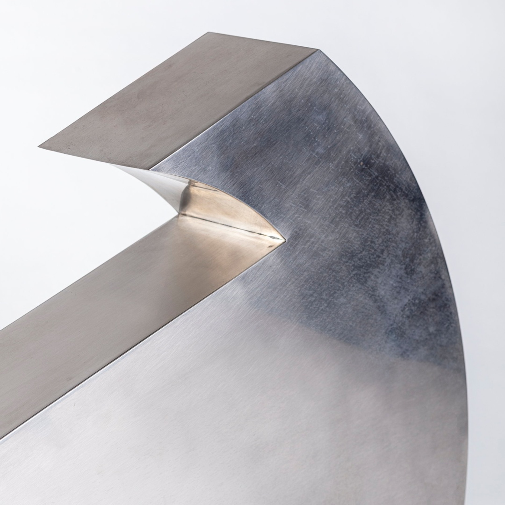
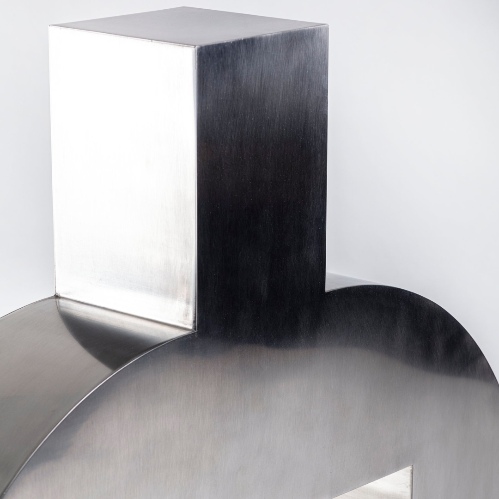
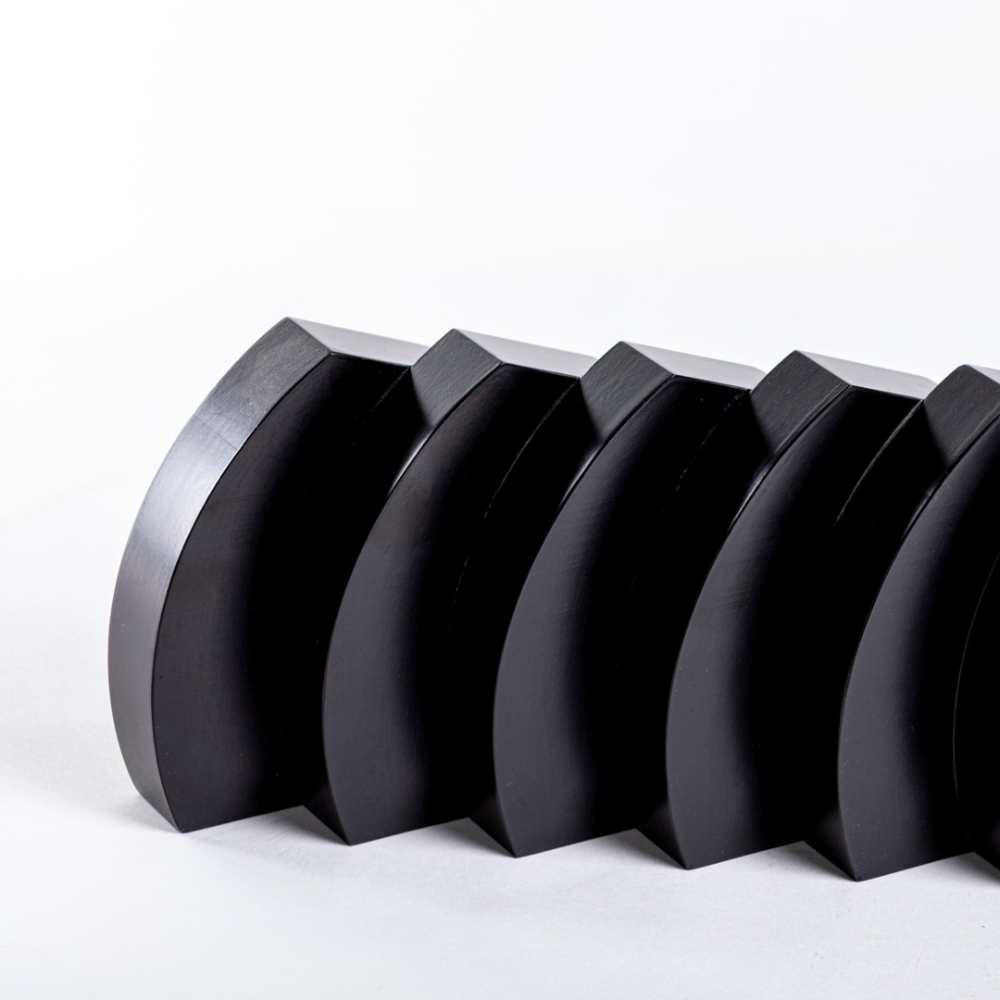
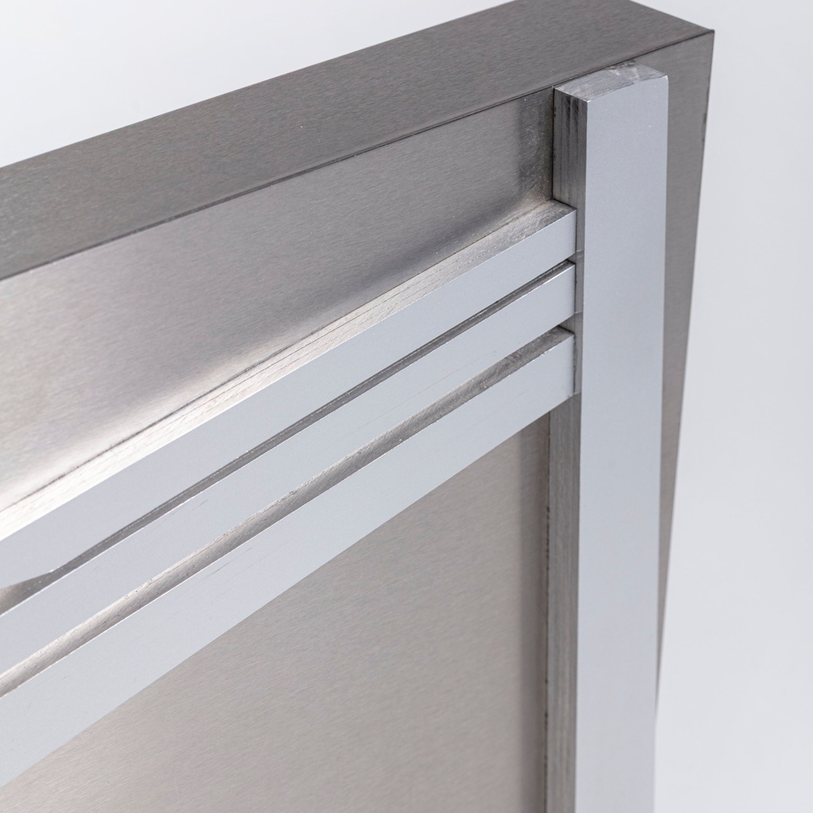

Giuliana Balice
Biografia
Giuliana Balice è una scultrice italiana nata a Napoli il 26 giugno 1931. Ha frequentato l’Accademia di Belle Arti di Napoli, diplomandosi in pittura sotto la guida di Emilio Notte. Nei primi anni ‘60, si trasferisce a Milano, dove entra in contatto con artisti e movimenti del Neoconcretismo, pur mantenendo una ricerca artistica autonoma. La sua produzione si concentra sulla geometria delle forme e sull’interazione tra spazio e volume, con opere che spaziano dal minimalismo a strutture più complesse. Nel corso della sua carriera, Balice ha esposto in diverse mostre personali e collettive. Attualmente, Giuliana Balice vive e lavora a Milano, continuando la sua ricerca artistica focalizzata sull’interazione tra forma, spazio e architettura. E’ un’artista la cui ricerca si concentra sull’interazione tra spazio e geometria, con una particolare attenzione all’astrazione geometrica e al minimalismo. Durante la sua formazione presso l’Accademia di Belle Arti di Napoli, è stata influenzata dal Costruttivismo Russo, dall’Arte Concreta e dal movimento De Stijl, correnti che hanno profondamente segnato il suo percorso artistico. La collezione di Balice è l’ultima corposa acquisizione della collezione del museo del 2015, e rappresenta l’artista presente con la maggior quantità di opere della collezione Umbro Apollonio.

Intervento sull'ambiente 4G
L’opera si distingue per la sua forma geometrica netta e dinamica, con una forte inclinazione spaziale che la rende quasi un segno tridimensionale proiettato nello spazio. L’uso di materiali industriali e forme essenziali rievoca anche il linguaggio dell’arte concreta e del costruttivismo. L’opera potrebbe essere letta come una riflessione sul movimento, la percezione dello spazio e l’interazione tra oggetto e ambiente, temi centrali nella ricerca artistica di Giuliana Balice.

HERMES
“Hermes” è una scultura dal forte impatto visivo, caratterizzata da una forma curva e dinamica che suggerisce movimento e leggerezza nonostante il materiale metallico. L’opera si inserisce nella ricerca dell’artista sulle forme geometriche astratte, tipiche dell’arte minimalista e dell’arte concreta. Il titolo “Hermes” potrebbe rimandare alla figura mitologica greca, il messaggero degli dèi, associato alla velocità e al movimento, caratteristiche che sembrano riflettersi nella forma slanciata e aerodinamica dell’opera.

BILANCIA
L’opera “Bilancia” si caratterizza per una forma curva e sinuosa, che sembra evocare un equilibrio dinamico tra le parti. Il titolo suggerisce un riferimento al concetto di bilanciamento, forse in senso fisico, strutturale o simbolico. L’uso dell’acciaio satinato conferisce alla scultura un aspetto moderno, con superfici che interagiscono con la luce creando giochi di riflessi e ombre. Le sue curve fluide e la solidità del metallo creano un contrasto tra leggerezza visiva e stabilità strutturale.

LUCE DIFFUSA

AL DI LÀ DEL TRIANGOLO
“Al di là del triangolo” è una scultura murale che si sviluppa attraverso una composizione geometrica essenziale. L’opera presenta un triangolo come forma di base, accompagnato da elementi curvi e tagli netti che creano un effetto dinamico e tridimensionale. L’interazione tra le diverse forme genera una sensazione di tensione e di equilibrio, suggerendo un superamento della rigidità del triangolo stesso.